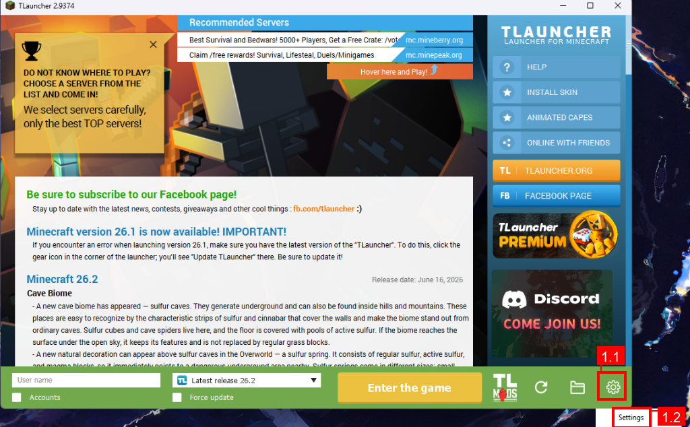
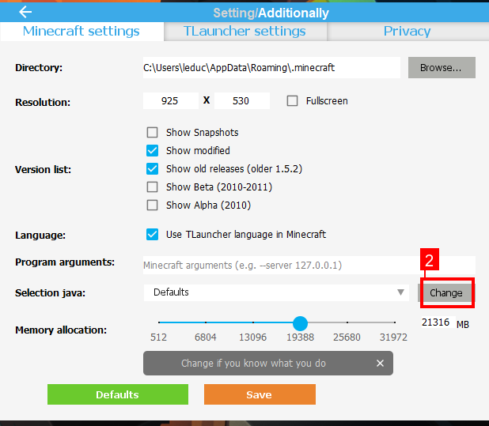
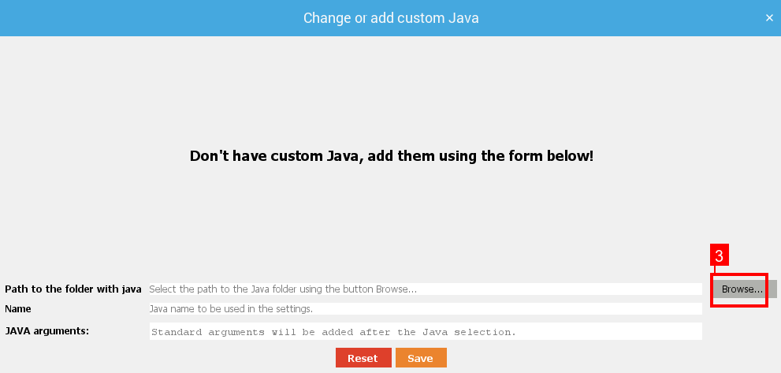
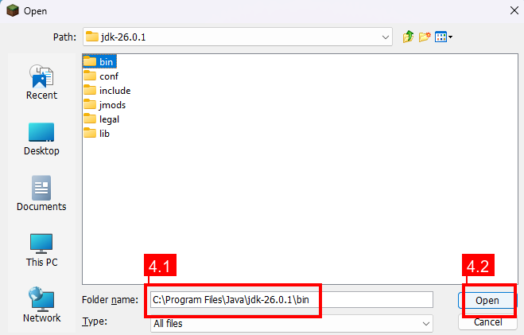
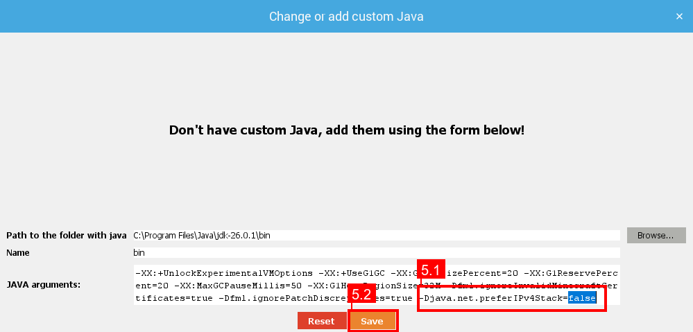
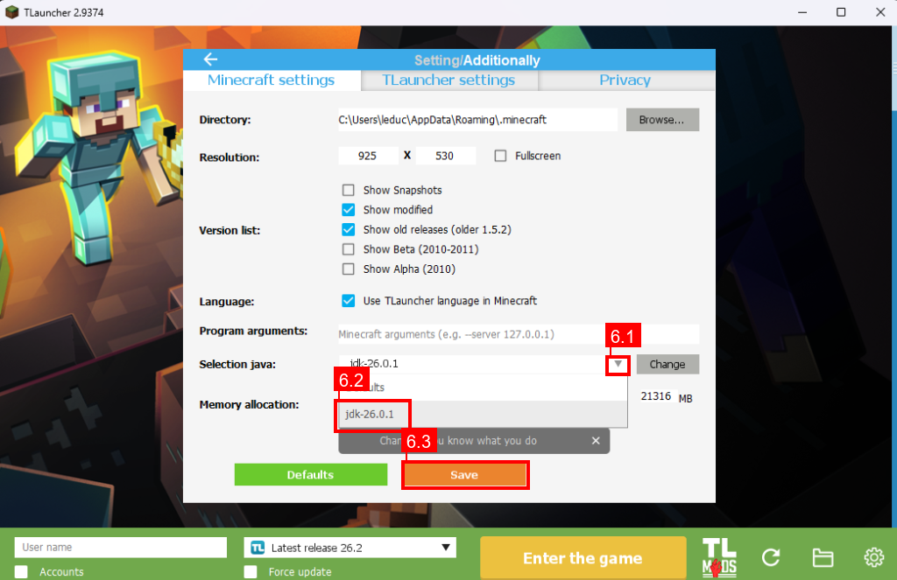
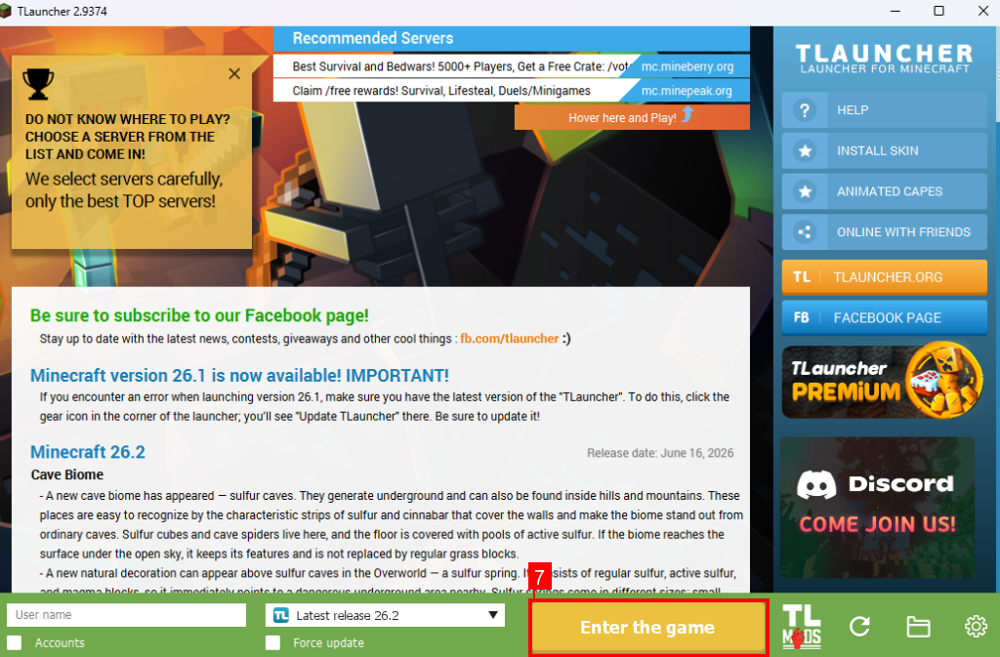

Some Minecraft launchers (notably TLauncher) start the game with the Java argument -Djava.net.preferIPv4Stack=true. This disables IPv6 networking, which means you cannot connect to servers that are only reachable via IPv6.
Follow the instructions below to enable IPv6 for your launcher.
For most standard Minecraft launchers (official launcher, Prism Launcher, MultiMC, etc.):
TLauncher hardcodes -Djava.net.preferIPv4Stack=true internally. The only way to override this through the UI is by adding a custom Java installation with modified arguments. Follow these steps:
On the main launcher screen, press the cogwheel icon in the bottom right corner, then select Settings.

In settings, go to the Minecraft settings tab. Then, press on Change on the row labeled Selection java.

At the "Change or add custom Java" panel, press on Browse.

At the open panel, navigate to your Java installation folder, select the bin folder, and press Open. (Note: Your Java version may differ from the screenshot. Mine is 26.0.1)

Back at the "Change or add custom Java" panel, the Java arguments will be automatically filled with default launcher arguments. The preferIPv4Stack flag defaults to true. Change it to false, then press Save.

Back to the Settings tab, on the Selection java row, press the down arrow to list all available Java versions. Select the newly created custom Java (mine is named jdk-26.0.1), and after that, press Save.

The configuration is complete. You can now Enter the game and use IPv6 to join servers.
